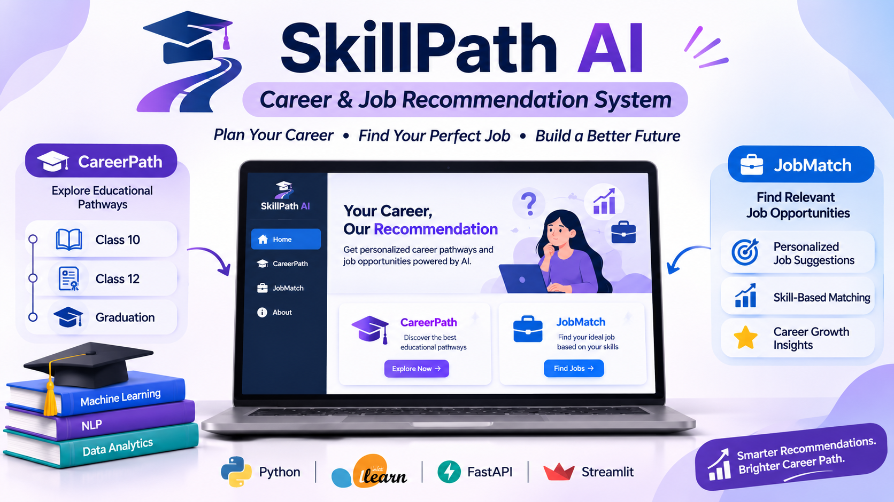
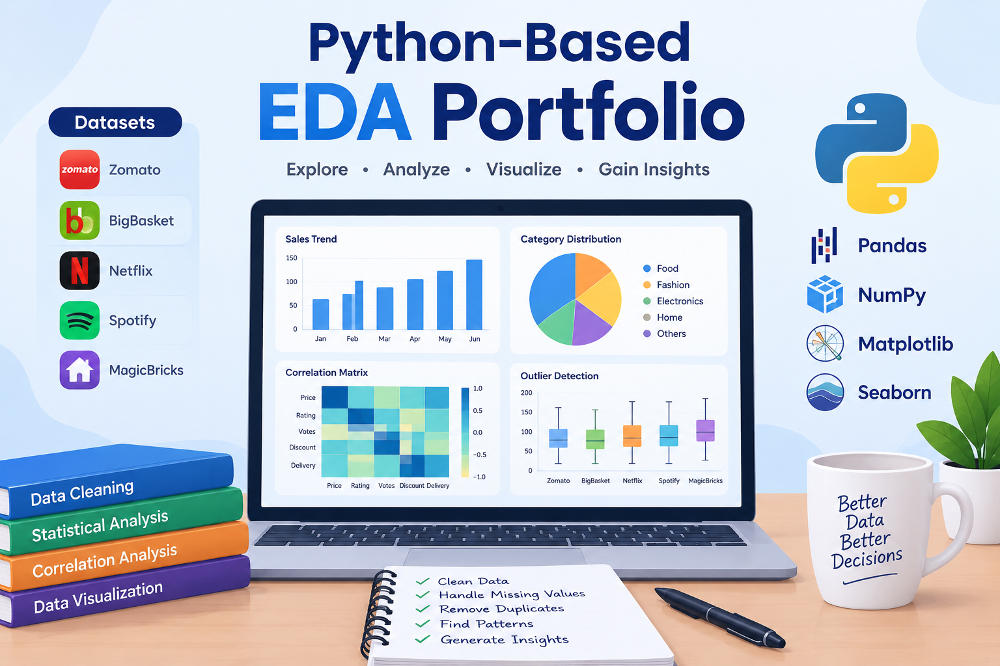
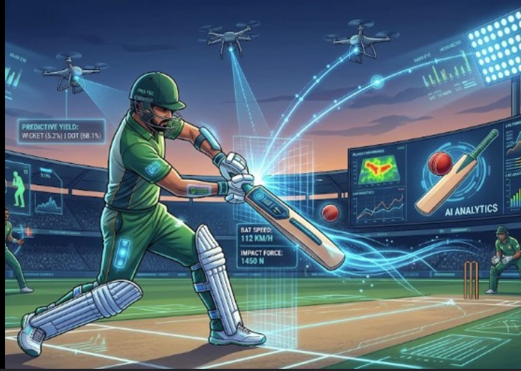

Passionate about Data Analytics, Business Intelligence, Artificial Intelligence, and Machine Learning.
I am a Computer Science undergraduate at SR University with practical experience in Python, Machine Learning, Natural Language Processing, and Data Analytics.
I enjoy working with data, building machine learning models, and developing recommendation systems to solve real-world problems. I have hands-on experience with Python, Scikit-learn, Pandas, NumPy, data preprocessing, model development, and evaluation.
Python, C
Scikit-learn, Machine Learning, Model Evaluation
Pandas, NumPy, Excel
Power BI, Matplotlib, Seaborn
HTML, CSS, JavaScript, Streamlit
MySQL, SQL
DSA, OOP, OS, DBMS, Computer Networks
Git, GitHub
VS Code, Google Colab, Jupyter Notebook

Developed an AI-based recommendation system that helps students explore suitable education pathways and job seekers find relevant job roles through two modules: CareerPath and JobMatch. Worked with 9,000 career records and 6,000 job records, applying data cleaning, preprocessing, feature engineering, and machine learning pipelines to generate recommendations. Created an interactive Streamlit interface connected to a FastAPI backend.
Technologies: Python, Scikit-learn, Machine Learning, NLP, FastAPI, Streamlit
View Project
Completed five exploratory data analysis projects across Zomato, BigBasket, Netflix, Spotify, and MagicBricks datasets. Performed data cleaning, missing-value handling, duplicate removal, statistical analysis, correlation analysis, and outlier detection. Created visualizations and analytical reports to identify trends, patterns, and actionable insights.
Technologies: Python, Pandas, NumPy, Matplotlib, Seaborn
View Project
Developed an end-to-end cricket analytics system using IPL match data with Python, MySQL, and Power BI. Built a Random Forest model to predict players' next-match scores using feature engineering. Created batting, bowling, and team performance dashboards and developed a Streamlit application for analytics and score prediction.
Technologies: Python, Machine Learning, MySQL, Power BI, Streamlit, Scikit-learn
View ProjectCleaned and transformed e-commerce data using Python and Pandas. Conducted cohort analysis to identify customer churn drivers and retention patterns. Developed an interactive Power BI dashboard tracking business KPIs and generated recommendations to improve customer retention and revenue growth.
Technologies: Python, Pandas, Matplotlib, Power BI
View ProjectJuly 2024 – September 2024 (10 Weeks)
8-Week Internship | August 2026
EduSkills
Thank you for visiting my portfolio.